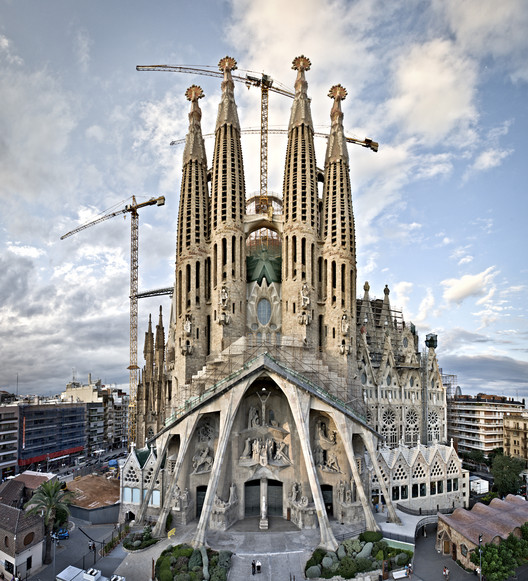

Granada is a popular tourist destination in Spain, with a key point of interest being the Alhambra Palace.
Photo Gallery
Historical records indicate that the palace was originally built in the 9th century, with new construction being added by various groups occupying the fortress at one time or another.The the influence of many cultures is visible in the architecture of the building.Bustling open-air markets are another attraction in the city.Spain has many locations that relate back to Christianity.
Barcelona
Geographic Location: Spain
Barcelona is another popular tourist destination, known for being a hub of culture, art, and history in Spain.
Photo Gallery

The Sagrada Familia is known for its unique blend of Spanish and Gothic influences, which can be seen across the Barcelona skyline. The cathedral has been under construction since 1882, with it expected to be finished around 2032.The city of Barecelona has incredible architecture outside of the cathedrals.A lot of the architecture that attracts tourists was done by Antoni Gaudi.
Valencia
Geographic Location: Spain
The city of Valencia is famous for its Old Town and the City of Arts and Sciences.
Photo Gallery
The Old Town of Valencia is known for the Central Market and the Silk Exchange. The City of Arts and Sciences is the most important modern tourist destination of Valencia. The City of Arts and Sciences is considered one of the 12 Treasures of Spain. Valencia is also well known for their beaches.
Madrid
Geographic Location: Spain
The city of Madrid is the capital of Spain and the most populated city in Spain.
Photo Gallery
Many of the cities in Spain are very pedestrian friendly, with Madrid being one of them. Plaza Mayor is a hub of public activity within Madrid, with it acting as a symbol of the city. The palace, which is now open to the public, once acted as the official residence of the royal family. Now it's a public museum. Madrid is also known for their football team, which plays at this stadium. This stadium can hold approximately 81,000 people.